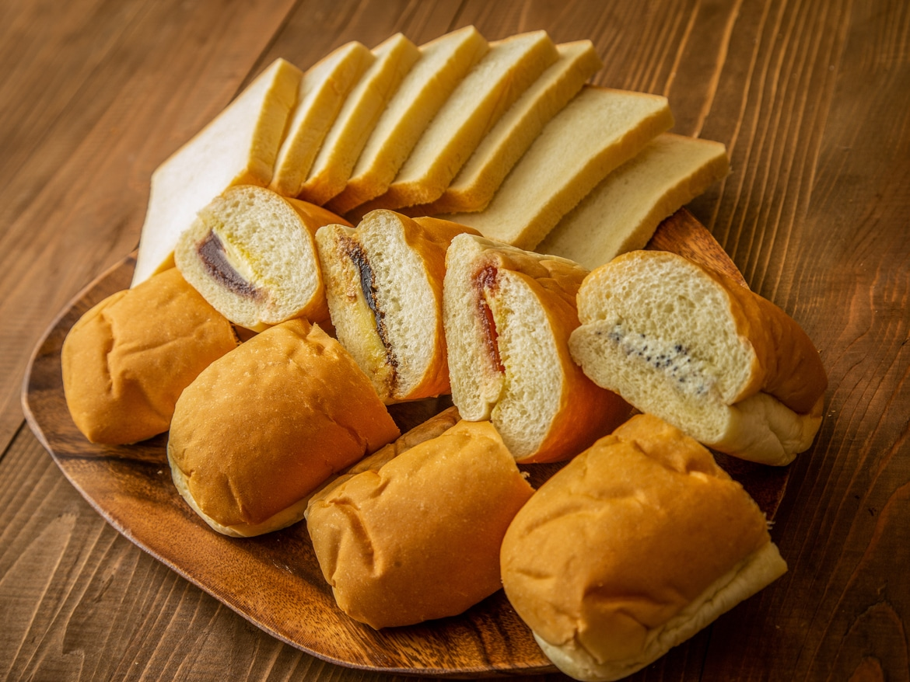

福田パン
福田パンは1948年創業し、現在では「盛岡のソウルフード」として親しまれています。福田パンのトレードマークのコッペパンは、昭和23年の創業から変わらぬ製法で作り続けています。直営店では、50種類以上のメニューがあり、注文を受けてからその場で作っています。おすすめは、福田パン一番人気の「あんバター」と、「コンビーフ(ポテトサラダ入り)」です。

福田パンは1948年創業し、現在では「盛岡のソウルフード」として親しまれています。福田パンのトレードマークのコッペパンは、昭和23年の創業から変わらぬ製法で作り続けています。直営店では、50種類以上のメニューがあり、注文を受けてからその場で作っています。おすすめは、福田パン一番人気の「あんバター」と、「コンビーフ(ポテトサラダ入り)」です。
〒020-0062 岩手県盛岡市長田町１２−１１